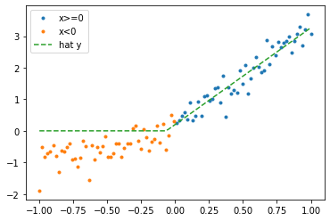

import numpy as np
import tensorflow as tf
import tensorflow.experimental.numpy as tnp
import matplotlib.pyplot as plt07. Adam
python
import graphviz
def gv(s): return graphviz.Source('digraph G{ rankdir="LR"'+s + '; }')tnp.experimental_enable_numpy_behavior()piece-wise linear regression
- 이제까지는 단순선형회귀에 대해서 다루었다면 일정한 지점에서 절단점을 가지는 piecc-wise linear regreesion을 다루어보자
\[y = x + 0.3\varepsilon \quad x\leq 0\]
\[y = 3.5x + 0.3\varepsilon\]
np.random.seed(2021025)
N = 100
x = np.linspace(-1,1,N)
e = np.random.normal(size=N)
y = list(map(lambda x,e : x + 0.3*e if x<=0 else 3.5*x +0.3*e,x,e))
y = np.array(y)시각화
plt.plot(x[x<=0],y[x<=0],".")
plt.plot(x[x>0],y[x>0],".")
plt.legend(["x<=0", "x>0"])풀이 1
- tip :
x,y가tensor가 아니어도 신경망 적합시 잘 적합된다.
x = x.reshape(N,1)
y = y.reshape(N,1)net = tf.keras.Sequential()
layer = tf.keras.layers.Dense(1)
net.add(layer)
net.compile(tf.optimizers.SGD(0.1),loss = "mse")
net.fit(x,y,batch_size=N,verbose=0,epochs=1000)<keras.callbacks.History at 0x7fee1f1e8b50>w = net.weightsbeta0, beta1 = w[1],w[0]yhat = x*beta1+beta0
yhat = yhat.reshape(N,)plt.plot(x[x<=0],y[x<=0],".")
plt.plot(x[x>0],y[x>0],".")
plt.plot(x,yhat,".")
plt.legend(["x<=0", "x>0","yhat"])위 적합한 모형은 틀렸음
우리가 의도한 모델은 피스와이즈 모델이지 단순선형모델이 아님 \(\to\) 꺽은선 형태의 모델이 형성되어야 한다.
위 같은 문제를
underfit의 문제라고 함.
풀이 2. 비선형 활성화 함수의 도입(Relu)
Relu
\[relu(x) = max(0,x)\]
#collapse
gv('''
"x" -> "x*w, bias=True"[label="*w"] ;
"x*w, bias=True" -> "y"[label="relu"] ''')_files/figure-html/cell-13-output-1.svg)
- 즉, \(x\)가 0보다 작은 녀석들은 전부다 0으로 보내는 활성화함수이다.
net2 = tf.keras.Sequential()
l1 = tf.keras.layers.Dense(1,input_shape=(1,))
a1 = tf.keras.layers.Activation(tf.nn.relu)
net2.add(l1)
net2.add(a1)- l1의 weight(\(\beta_1\))값이 1보다 크게 나와야 현재 보여주려는 문제 의도대로 풀 수 있다.
l1.weights[<tf.Variable 'dense_3/kernel:0' shape=(1, 1) dtype=float32, numpy=array([[0.47527015]], dtype=float32)>,
<tf.Variable 'dense_3/bias:0' shape=(1,) dtype=float32, numpy=array([0.], dtype=float32)>]- 현재 생성한 네트워크 상황을 확인해보자.
u1 = l1(x)
v1 = a1(u1)plt.plot(x,x,"--")
plt.plot(x,u1,"--")
plt.plot(x,v1,"--")
plt.legend(["x=x","y=linear x","relu (y)"])- 오 표현하려는 relu 함수처럼 잘 표시된 것 같다.
이제 모델을 컴파일 하고 적합해보자!!
net2.compile(tf.optimizers.SGD(0.1),loss="MSE")
net2.fit(x,y,N,1000,0)<keras.callbacks.History at 0x7fee1ed30f50>yhat = net2(x)
yhat = yhat.reshape(N,) ## 이건 굳이 안해줘도 되나 습관화하자 (목적에 맞게 차원변환)plt.plot(x[x>=0],y[x>=0],".",label="x>=0")
plt.plot(x[x<0],y[x<0],".",label="x<0")
plt.plot(x,yhat,"--",label="hat y")
plt.legend()
그런데… 아직도 \(x<0\)인 부분에서는 모델 적합이 잘 되지 않은 것 같다.
why? relu 함수의 특성상 \(relu(y) = 0, (y<0)\) 으로 전부 보냈기 때문!
이제 선형변환된 값들이 0 이하로 떨어지는 부분들을 어떻게 하면 잘 적합시킬 수 있는지 해결하자!
해결책 : \(\hat {y}\) 가 2개가 있으면?
풀이 3
목표 : \(\hat y\)를 2개 만들자,즉 \(\hat y \to (N,2)\)
위의 의도대로 하려면 하나의 \(\bf X\)를 받아 2개의 출력이 나와야한다!!
net3 = tf.keras.Sequential()
l1 = tf.keras.layers.Dense(2,input_shape=(1,))
a1 = tf.keras.layers.Activation(tf.nn.relu)
net3.add(l1)
net3.add(a1)(현재 네트워크 상황 확인)
l1.weights[<tf.Variable 'dense_50/kernel:0' shape=(1, 2) dtype=float32, numpy=array([[-1.1642166, 0.6747991]], dtype=float32)>,
<tf.Variable 'dense_50/bias:0' shape=(2,) dtype=float32, numpy=array([0., 0.], dtype=float32)>]## collapse
fig,(ax1,ax2) = plt.subplots(1,2)
fig.set_figwidth(10)
fig.set_figheight(5)
ax1.plot(x,x,"--")
ax1.plot(x,l1(x),"--")
ax1.legend(["x","l1=w1*x+b","l2=w2*x+b"])
ax2.plot(x,x,"--")
ax2.plot(x,a1(l1(x)),"--")
ax2.legend(["x","al(l1)","al(l2)"])- 위의 문제점
1. 우리의 의도대로 relu를 지나서 \(\hat y\) 를 2차원으로 만들었다..
2. 근데 차피 relu를 지나면 al(l1),al(l2)가 0보다 작으면 \(\hat y\)는 전부 0이 나올 것임
3. 해결책 : 노드를 추가해서 al(l1),al(l2)를 입력으로 받아 선형모형을 다시 만들자
4. 또한 \(\hat y\)의 차원의 수를 의도적으로 2차원으로 만들었으니 다시 1차원으로 변경해주자!
- 즉, 입력차원 2, 출력차원 1로 변환해주는 노드를 추가
python
temp = tf.keras.Sequential()
_l1 = tf.keras.layers.Dense(2,input_shape=(1,))
_a1 = tf.keras.layers.Activation(tf.nn.relu)
_l2 = tf.keras.layers.Dense(2,input_shape=(2,))
temp.add(_l1)
temp.add(_a1)
temp.add(_l2)temp.summary()Model: "sequential_21"
_________________________________________________________________
Layer (type) Output Shape Param #
=================================================================
dense_26 (Dense) (None, 2) 4
activation_15 (Activation) (None, 2) 0
dense_27 (Dense) (None, 2) 6
=================================================================
Total params: 10
Trainable params: 10
Non-trainable params: 0
_________________________________________________________________l2 = tf.keras.layers.Dense(1,input_shape=(2,))net3.add(l2)l2.weights[<tf.Variable 'dense_51/kernel:0' shape=(2, 1) dtype=float32, numpy=
array([[-0.54625785],
[ 0.949442 ]], dtype=float32)>,
<tf.Variable 'dense_51/bias:0' shape=(1,) dtype=float32, numpy=array([0.], dtype=float32)>]net3.summary()Model: "sequential_34"
_________________________________________________________________
Layer (type) Output Shape Param #
=================================================================
dense_50 (Dense) (None, 2) 4
activation_28 (Activation) (None, 2) 0
dense_51 (Dense) (None, 1) 3
=================================================================
Total params: 7
Trainable params: 7
Non-trainable params: 0
_________________________________________________________________net3.compile(tf.optimizers.SGD(0.1),loss="mse")
net3.fit(x,y,N,1000,0)<keras.callbacks.History at 0x7fee12a87950>yhat = net3(x)
yhat = yhat.reshape(N,)(네트워크의 변화과정 확인)
l1_1=l1(x)[:,[0]].reshape(N,)
l1_2=l1(x)[:,[1]].reshape(N,)l2.weights[<tf.Variable 'dense_51/kernel:0' shape=(2, 1) dtype=float32, numpy=
array([[-0.734917 ],
[ 1.8227489]], dtype=float32)>,
<tf.Variable 'dense_51/bias:0' shape=(1,) dtype=float32, numpy=array([-0.05703843], dtype=float32)>]fig,(ax1,ax2,ax3) = plt.subplots(1,3)
fig.set_figwidth(14b)
fig.set_figheight(5)
ax1.plot(x,y,".")
ax1.plot(x,l1_1,"--")
ax1.plot(x,l1_2,"--")
ax1.legend(["y","l1","l2"])
ax1.set_title("1st linear regreesion")
ax2.plot(x,y,".")
ax2.plot(x,a1(l1(x)),"--")
ax2.set_title("2st relu")
ax2.legend(["y","relu(l1)","relu(l2)"])
ax3.plot(x,y,".")
ax3.plot(x,l2(a1(l1(x))),"--")
ax3.set_title("3rd linear regression")
ax3.legend(["y","l2"])_files/figure-html/cell-33-output-1.png)
표본의 수가 작아서 그런가 의도한대로 잘 안나오다가 한 10번 돌려서 나온 것 같음..
즉. 여기까지 요약하자면
2개의 출력을 가지는 linear \(\to\) relu \(\to\) 1차원의 linear
근데 풀이 3의 실패하는 경우도 존재함.
np.random.seed(4)
N = 100
x = np.linspace(-1,1,N)
e = np.random.normal(size=N)
y = list(map(lambda x,e : x + 0.3*e if x<=0 else 3.5*x +0.3*e,x,e))
y = np.array(y)
x= x.reshape(N,1)
y= y.reshape(N,1)tf.random.set_seed(2)
net3 = tf.keras.Sequential()
####
net3.add(tf.keras.layers.Dense(2))
net3.add(tf.keras.layers.Activation("relu"))
net3.add(tf.keras.layers.Dense(1))
####
net3.compile(optimizer = tf.optimizers.SGD(0.1),loss="mse")
net3.fit(x,y,epochs=1000,verbose=0,batch_size=N)<keras.callbacks.History at 0x7fee1d2ff490>l2.weights[<tf.Variable 'dense_51/kernel:0' shape=(2, 1) dtype=float32, numpy=
array([[-0.734917 ],
[ 1.8227489]], dtype=float32)>,
<tf.Variable 'dense_51/bias:0' shape=(1,) dtype=float32, numpy=array([-0.05703843], dtype=float32)>]- 그냥 이거는 교수님 코드 따라서 친건데 밑에 그래프하고 똑같음
#collapse
fig, (ax1,ax2,ax3,ax4) = plt.subplots(1,4)
fig.set_figwidth(16)
ax1.plot(x,y,'.')
ax1.plot(x,l1(x)[:,0],'--r')
ax1.plot(x,l1(x)[:,1],'--b')
ax2.plot(x,y,'.')
ax2.plot(x,a1(l1(x))[:,0],'--r')
ax2.plot(x,a1(l1(x))[:,1],'--b')
ax3.plot(x,y,'.')
ax3.plot(x,a1(l1(x))[:,0]*(-0.734917),'--r')
ax3.plot(x,a1(l1(x))[:,1]*(1.8227489)+(-0.05703843),'--b')
ax4.plot(x,y,'.')
ax4.plot(x,a1(l1(x))[:,0]*(-0.734917)+a1(l1(x))[:,1]*(1.8227489)+(-0.05703843),'--')#collapse
fig,(ax1,ax2,ax3) = plt.subplots(1,3)
fig.set_figwidth(14)
fig.set_figheight(5)
ax1.plot(x,y,".")
ax1.plot(x,l1_1,"--")
ax1.plot(x,l1_2,"--")
ax1.legend(["y","l1","l2"])
ax1.set_title("1st linear regreesion")
ax2.plot(x,y,".")
ax2.plot(x,a1(l1(x)),"--")
ax2.set_title("2st relu")
ax2.legend(["y","relu(l1)","relu(l2)"])
ax3.plot(x,y,".")
ax3.plot(x,l2(a1(l1(x))),"--")
ax3.set_title("3rd linear regression")
ax3.legend(["y","l2"])_files/figure-html/cell-38-output-1.png)
사실 위 경우는 2개의 linear가 둘 다 일을 잘하고 있는 것임
근데 가끔 둘 중에 한 개가 일을 제대로 하지 못하는 경우가 발생 (예를 들어 선형변환된 선중에 하나가 계속 0값을 가지면?)
즉, 현재 학습한 에포크에서 우리가 만든 모델이 최적상태이다. \(\to\) 완전한 예측은 난 못해 이런느낌
이를
global minimum(로스를 최소하는)을 찾지 못하고local minimum(현재 조건에서 최적화한)에 빠졌다고 한다.7주차 공부한
피스와이즈는DNN이라고 할 수 있다.
logistic
결론부터 말하자면 로지스틱은
MSE대신BCE(Binary cross entropy)를 손실함수로 사용한다.왜? 로지스틱의 손실함수 BCE인 경우 convex(2차함수모양)하기 때문에 글로벌 미니멈을 잘 찾을 수 있음!!
예제
N = 2000
x = np.linspace(-1,1,N).reshape(N,1)초기 가중치 설정 및 베르누이 분포
w0 = -1
w1 = 5
u = w0+x*w1
v = tf.nn.sigmoid(u)
y = tf.constant(np.random.binomial(1,v))plt.plot(x,y,".",alpha=0.2)
plt.plot(x,v,"--")
plt.legend(["y","p(y=1)"])케라스를 이용하여 구현
net = tf.keras.Sequential()
net.add(tf.keras.layers.Dense(1,input_shape=(1,),activation="sigmoid"))
net.compile(tf.optimizers.SGD(0.1),loss='binary_crossentropy' )net.fit(x,y,epochs=1000,verbose=0,batch_size=N)<keras.callbacks.History at 0x7fee12459b90>fig, (ax1,ax2) = plt.subplots(1,2)
fig.set_figwidth(12)
ax1.plot(x,y,".",alpha=0.2)
ax1.plot(x,v,"--")
ax1.legend(["y","p(y=1)"])
ax1.set_title("not keras")
ax2.plot(x,y,".",alpha=0.2)
ax2.plot(x,net(x),"--")
ax2.legend(["y","p(y=1)"])
ax2.set_title("with keras")Text(0.5, 1.0, 'with keras')MSE vs BCE
net2 = tf.keras.Sequential()
net2.add(tf.keras.layers.Dense(1,input_shape=(1,),activation="sigmoid"))
net2.compile(tf.optimizers.SGD(0.1),loss='mse' )net2.fit(x,y,epochs=1000,verbose=0,batch_size=N)<keras.callbacks.History at 0x7fee11a3e2d0>plt.plot(x,y,".",alpha=0.2)
plt.plot(x,net(x),"--")
plt.plot(x,net2(x),"--")
plt.legend(["y","BCE","MSE"])
plt.title("BCE vs MSE")Text(0.5, 1.0, 'BCE vs MSE')로지스틱 회귀모형의 특성상 \(x\)는 0을 기점으로 약간 지그재그에 가까울수록 좋은 모형인데
BCE가 확실히MSE에 비해서 지그재그에 가까워 보인다!즉 BCE는 동일한 조건(epoch,가중치)에서
BCE가MSE보다 적합이 뛰어나다.
MSE, BCE loss 비교
mseloss_fn = lambda y,yhat: tf.reduce_mean((y-yhat)**2)
bceloss_fn = lambda y,yhat: -tf.reduce_mean(y*tnp.log(yhat) + (1-y)*tnp.log(1-yhat))def loss_fn1(w0,w1):
u = w0+w1*x
yhat = np.exp(u)/(np.exp(u)+1)
return mseloss_fn(y,yhat)
def loss_fn2(w0,w1):
u = w0+w1*x
yhat = np.exp(u)/(np.exp(u)+1)
return bceloss_fn(y,yhat)w0, w1 = np.meshgrid(np.arange(-10,3,0.2), np.arange(-1,10,0.2), indexing='ij')
w0, w1 = w0.reshape(-1), w1.reshape(-1)
loss1 = list(map(loss_fn1,w0,w1))
loss2 = list(map(loss_fn2,w0,w1))w0.shape,w1.shape((3575,), (3575,))fig = plt.figure()
fig.set_figwidth(9)
fig.set_figheight(9)
ax1=fig.add_subplot(1,2,1,projection='3d')
ax2=fig.add_subplot(1,2,2,projection='3d')
ax1.elev=15
ax2.elev=15
ax1.azim=75
ax2.azim=75
ax1.scatter(w0,w1,loss1,s=0.1)
ax1.set_title("MSE Loss")
ax2.scatter(w0,w1,loss2,s=0.1)
ax2.set_title("BCE Loss")Text(0.5, 0.92, 'BCE Loss')로스를 확인한 결과 오른쪽 그림이 더 최적해에 잘 수렴할 것 같음
이번엔 동일한 기준을 설정해놓고 확인해보자.
- 파라미터 : (w0,w1) = (-3.0,1.0), epoch 15 마다 관찰
x.shape(2000, 1)tf.ones(N,dtype=tf.float64).reshape(N,1)<tf.Tensor: shape=(2000, 1), dtype=float64, numpy=
array([[1.],
[1.],
[1.],
...,
[1.],
[1.],
[1.]])>X = tf.concat([tf.ones(N,dtype=tf.float64).reshape(N,1),x],axis=1)X.shapeTensorShape([2000, 2])net1 = tf.keras.Sequential()
net1.add(tf.keras.layers.Dense(1,use_bias=False,activation='sigmoid'))
net1.compile(tf.keras.optimizers.SGD(0.1),loss="mse")
net1.fit(X,y,N,1,0)<keras.callbacks.History at 0x7fee0a4f27d0>net2 = tf.keras.Sequential()
net2.add(tf.keras.layers.Dense(1,use_bias=False,activation='sigmoid'))
net2.compile(tf.keras.optimizers.SGD(0.1),loss="binary_crossentropy")
net2.fit(X,y,N,1,0)<keras.callbacks.History at 0x7fee0a47add0>- 에포크 한번 안덜리면
set_weights못함…
net1.set_weights([tnp.array([[-3.0 ],[ -1.0]],dtype=tf.float32)])
net2.set_weights([tnp.array([[-3.0 ],[ -1.0]],dtype=tf.float32)])net_mse.get_weights(), net_bce.get_weights()([array([[-3.],
[-1.]], dtype=float32)], [array([[-3.],
[-1.]], dtype=float32)])이제 15 epoch마다 기록해보자
mse_hat = tnp.array([[-3.0 ],[ -1.0]],dtype=tf.float32)
bce_hat = tnp.array([[-3.0 ],[ -1.0]],dtype=tf.float32)tf.concat([mse_hat,bce_hat],axis=1)<tf.Tensor: shape=(2, 2), dtype=float32, numpy=
array([[-3., -3.],
[-1., -1.]], dtype=float32)>net1.weights[0]<tf.Variable 'dense_116/kernel:0' shape=(2, 1) dtype=float32, numpy=
array([[-1.4075234 ],
[ 0.26052466]], dtype=float32)>for i in range(29) :
net1.fit(X,y,N,15,0)
net2.fit(X,y,N,15,0)
mse_hat = tf.concat([mse_hat,net1.weights[0]],axis=1)
bce_hat = tf.concat([bce_hat,net2.weights[0]],axis=1)시각화
from matplotlib import animation
plt.rcParams["animation.html"] = "jshtml"fig = plt.figure()
fig.set_figwidth(6)
fig.set_figheight(6)
fig.suptitle("SGD, Winit=(-3,-1)")
ax1=fig.add_subplot(2,2,1,projection='3d')
ax2=fig.add_subplot(2,2,2,projection='3d')
ax1.elev=15;ax2.elev=15;ax1.azim=75;ax2.azim=75
ax3=fig.add_subplot(2,2,3)
ax4=fig.add_subplot(2,2,4)
ax1.scatter(w0,w1,loss1,s=0.1);ax1.scatter(-1,5,loss_fn1(-1,5),color='red',marker='*',s=200)
ax2.scatter(w0,w1,loss2,s=0.1);ax2.scatter(-1,5,loss_fn2(-1,5),color='red',marker='*',s=200)
ax3.plot(x,y,','); ax3.plot(x,v,'--r');
line3, = ax3.plot(x,1/(1+np.exp(-X@mse_hat[:,0])),'--b')
ax3.set_title("MSE")
ax4.plot(x,y,','); ax4.plot(x,v,'--r')
line4, = ax4.plot(x,1/(1+np.exp(-X@bce_hat[:,0])),'--b')
ax4.set_title("BCE")
def animate(i):
_w0_mse,_w1_mse = mse_hat[:,i]
_w0_bce,_w1_bce = bce_hat[:,i]
ax1.scatter(_w0_mse, _w1_mse, loss_fn1(_w0_mse, _w1_mse),color='gray')
ax2.scatter(_w0_bce, _w1_bce, loss_fn2(_w0_bce, _w1_bce),color='gray')
line3.set_ydata(1/(1+np.exp(-X@mse_hat[:,i])))
line4.set_ydata(1/(1+np.exp(-X@bce_hat[:,i])))
ani = animation.FuncAnimation(fig, animate, frames=30)
plt.close()
aniOutput hidden; open in https://colab.research.google.com to view.MSE의 경우 초기 기울기가 크지 않아 loss가 0으로 가는 속도가 매우 느리다.
즉 동일한 기준에서 BCE loss가 성능이 더좋다!!
Adam 옵티마이저
net_mse = tf.keras.Sequential()
net_mse.add(tf.keras.layers.Dense(1,use_bias=False,activation='sigmoid'))
net_mse.compile(optimizer=tf.optimizers.Adam(0.1),loss=mseloss_fn)
net_mse.fit(X,y,epochs=1,batch_size=N)1/1 [==============================] - 0s 438ms/step - loss: 0.3187<keras.callbacks.History at 0x7fee07c90f90>net_bce = tf.keras.Sequential()
net_bce.add(tf.keras.layers.Dense(1,use_bias=False,activation='sigmoid'))
net_bce.compile(optimizer=tf.optimizers.Adam(0.1),loss=bceloss_fn)
net_bce.fit(X,y,epochs=1,batch_size=N)1/1 [==============================] - 0s 495ms/step - loss: 0.8539<keras.callbacks.History at 0x7fee07a886d0>net_mse.set_weights([tnp.array([[-3.0 ],[ -1.0]],dtype=tf.float32)])
net_bce.set_weights([tnp.array([[-3.0 ],[ -1.0]],dtype=tf.float32)])What_mse = tnp.array([[-3.0 ],[ -1.0]],dtype=tf.float32)
What_bce = tnp.array([[-3.0 ],[ -1.0]],dtype=tf.float32)for k in range(29):
net_mse.fit(X,y,epochs=15,batch_size=N,verbose=0)
net_bce.fit(X,y,epochs=15,batch_size=N,verbose=0)
What_mse = tf.concat([What_mse,net_mse.weights[0]],axis=1)
What_bce = tf.concat([What_bce,net_bce.weights[0]],axis=1)fig = plt.figure()
fig.set_figwidth(6)
fig.set_figheight(6)
fig.suptitle("Adam, Winit=(-3,-1)")
ax1=fig.add_subplot(2,2,1,projection='3d')
ax2=fig.add_subplot(2,2,2,projection='3d')
ax1.elev=15;ax2.elev=15;ax1.azim=75;ax2.azim=75
ax3=fig.add_subplot(2,2,3)
ax4=fig.add_subplot(2,2,4)
ax1.scatter(w0,w1,loss1,s=0.1);ax1.scatter(-1,5,loss_fn1(-1,5),color='red',marker='*',s=200)
ax2.scatter(w0,w1,loss2,s=0.1);ax2.scatter(-1,5,loss_fn2(-1,5),color='red',marker='*',s=200)
ax3.plot(x,y,','); ax3.plot(x,v,'--r');
line3, = ax3.plot(x,1/(1+np.exp(-X@What_mse[:,0])),'--b')
ax4.plot(x,y,','); ax4.plot(x,v,'--r')
line4, = ax4.plot(x,1/(1+np.exp(-X@What_bce[:,0])),'--b')
def animate(i):
_w0_mse,_w1_mse = What_mse[:,i]
_w0_bce,_w1_bce = What_bce[:,i]
ax1.scatter(_w0_mse, _w1_mse, loss_fn1(_w0_mse, _w1_mse),color='gray')
ax2.scatter(_w0_bce, _w1_bce, loss_fn2(_w0_bce, _w1_bce),color='gray')
line3.set_ydata(1/(1+np.exp(-X@What_mse[:,i])))
line4.set_ydata(1/(1+np.exp(-X@What_bce[:,i])))
ani = animation.FuncAnimation(fig, animate, frames=30)
plt.close()
aniOutput hidden; open in https://colab.research.google.com to view.Adam의 경우 손실함수 미분시 자동으로scale을 조정해주고 계산된 기울기 값을 누적시켜 반영하기 때문에 잘 적합됨을 보인다.그렇다고 손실함수 상관없이
Adam을 무조건으로 선호하면 안된다.아무리
Adam이라고 해도 초기값 설정이 좋지 않으면 로컬미니멈에서 빠져나오기 힘들다.따라서 경우에 맞게 일차적으로 손실함수를 결정한 후 그 후에 옵티마이저를 결정하는 것이 옳은 판단!!